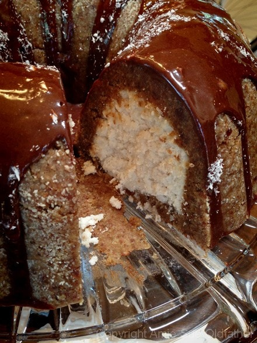

Almond Cardamon Bundt Cake

~ raw, vegan, gluten-free ~
I have always wanted to make a bundt cake. I have always wanted to make a white raw cake. Well my golly, I finally made a raw white bundt cake! I won’t beat around the bush… It took a lot of ingredients to make this cake. But then I used a full-size bundt pan; you could always use a smaller pan, in any shape to make this recipe. Of course, you will need to adjust the measurements.
Please don’t get overwhelmed as you scroll down and see how long this post is. Go ahead, take a quick scroll and then come back up here, I will wait… Ok, good to see you back here. Looks complicated, doesn’t it? Well, to be honest, it isn’t. I worked hard to show you, step by step, how I made this cake, and that is why it looks so long.
I normally don’t have an abundance of almond pulp on hand, but a girlfriend asked me to make some almond milk for her. We split the cost of the almonds, she got the milk, and I got to keep the pulp. Match made in heaven! So, if you are like me and don’t drink enough almond milk to build up a supply… find a friend that would be interested in some milk and present this deal to him/her.
Typically when I make nut milk, I don’t remove the skins. But one day I found myself needing a little therapy and standing over a bowl of soaked almonds, popping them out of their skins while watching the swaying of the trees through the window, did the trick. .And I ended up with some GORGEOUS white almond pulp! And this my friends is how I came up with today’s cake.
So, if you are like me and don’t drink enough almond milk to build up a supply… find a friend that would be interested in some milk and present this deal to him/her. Generally, when I make nut milk, I don’t remove the skins. But one day I found myself needing a little therapy and standing over a bowl of soaked almonds, popping them out of their skins while watching the swaying of the trees through the window, did the trick. .And I ended up with some GORGEOUS white almond pulp! And this my friends is how I came up with today’s cake.
This cake is big and rich, perfect for a party or family gatherings. When serving, I suggest making small slices and drizzle extra chocolate ganache on top! Bob polished off a large slice (the one in the photo below) and found himself with a full belly when all was said and done. He said that half that amount would have been perfect, but he couldn’t stop himself. Haha, The two cake batters offer two different textures. Bob said that the white cake reminded him of cheesecake in a way, though not as creamy. So get out in that kitchen, and have some fun. :) Have a blessed day.
Ingredients:

Outer layer – Almond Cardamom:
(I made 5 batches for this pan)
- 2 cups almond flour/meal
- 1 cup packed Medjool dates
- 1/4 tsp Himalayan pink salt
- 1 tsp vanilla extract
- 1/4 tsp ground cardamom
Inner cake batter: yields 8 cups cake batter
- 5 1/2 cups white, moist, packed almond pulp
- 3 cups dried shredded unsweetened coconut
- 3/4 tsp sea salt
- 3 Tbsp raw honey
- 1/4 cup almond milk
- 3 Tbsp agave powder
- 6 tsp almond extract
- 1/4 cup coconut oil, melted
Chocolate ganache: yields 2 cups
- 1 1/2 cups raw agave syrup or maple syrup
- 1 1/2 cups raw cacao powder
- 2/3 cup raw cold pressed coconut oil, melted
- 1/4 tsp sea salt
Preparation:
Outer layer:
- Prepare the pan by lightly greasing it with coconut oil and then sprinkle a dusting of almond meal/flour around the inside. Set aside.
- Pit and inspect each date, placing them in a medium-sized bowl. Add warm water and allow them to soften while you put the dry ingredients together.
- Place the almond meal, salt and cardamom in the food processor, fitted with the “S” blade, pulse to mix.
- When making your own almond meal/flour, be sure to presoak the almonds. You can process them wet, or you can use already soaked and dehydrated almonds. I did it both ways.
- Drain the dates and place them in the food processor in a single layer, add the vanilla. Process will the dough starts to clump together.
- Do this process a total of 5x. (if you are making a full bundt cake size).
- Doubling the batter might be too hard on your machine.
- You will use 4 batters worth for the sides of the cake.
- Set 1 batters worth aside, this will be the base.
- Place the dough on parchment paper and roll out to about 1/4-1/2″ thickness.
- Keep it in a circular shape a bit larger than your pan.
- Flip this over onto the opening of your pan and gently press it into place. You will need to piece it together a bit, just smooth all the edges with your fingertip. You can press lumps of dough around the pan inside, but I found doing it the other way made a nice even layer.
- Clean up the edges. Taste test the scraps. :) Set aside
Inner white cake:
- Place the almond pulp, shredded coconut, salt, honey, milk, agave powder, almond extract and coconut oil in a large bowl. With your hands mix everything together really good.
- To make this vegan, replace the honey with another liquid sweetener.
- Loosely disperse cake batter clumps around the pan.
- Then with your hand or a spatula press the cake into the pan firmly and evenly.
- Leave about 1/2″ from the top so you can press the base of the cake on.
- You will use that 1 batters worth that you had set aside for this.
- Roll that batter into a circle about the diameter of the pan that you are using. Do this on parchment paper. Flip this over onto the pan and peel the parchment paper off. Smooth out the batter. See photos below.
- Turn the pan over onto a plate or serving dish. Allow the cake to drop out by itself; it should release just fine.
- Make the ganache.
Ganache:
- Place all of the ingredients in a blender and process until smooth.
- Stop occasionally to scrape down the sides of the blender jar with a rubber spatula.
- Pour the desired amount around the top of the cake and allow it to fall naturally. You will have extra chocolate to use when plating.
- Serve in small slices. This is dense and rich! Store in the fridge for up to 1 week or in the freezer for 3 months. Be sure to seal it well, so it doesn’t dry out or absorb fridge or freezer odors.
© AmieSue.com